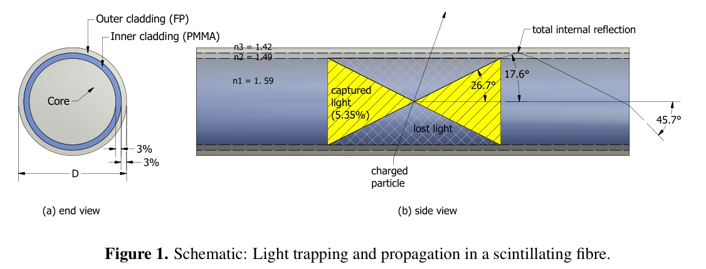
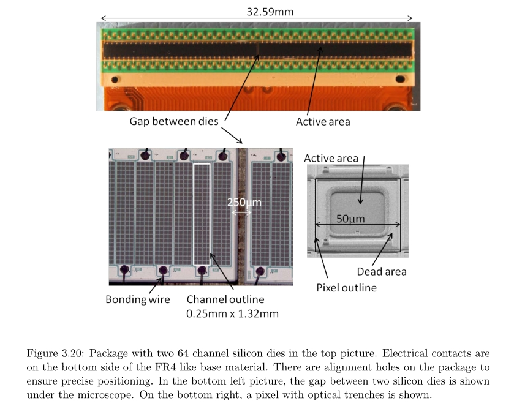
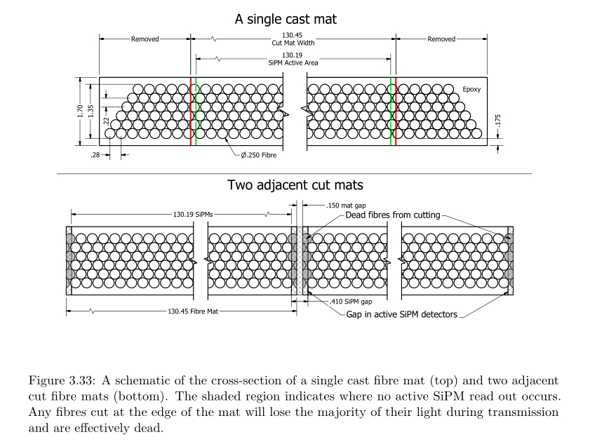
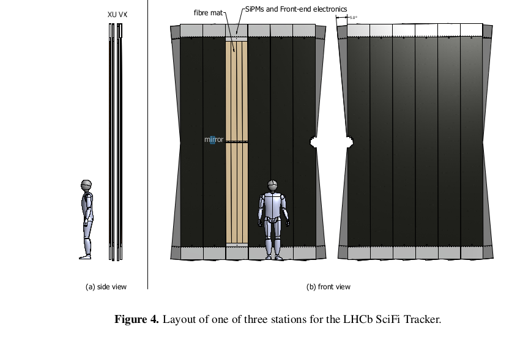
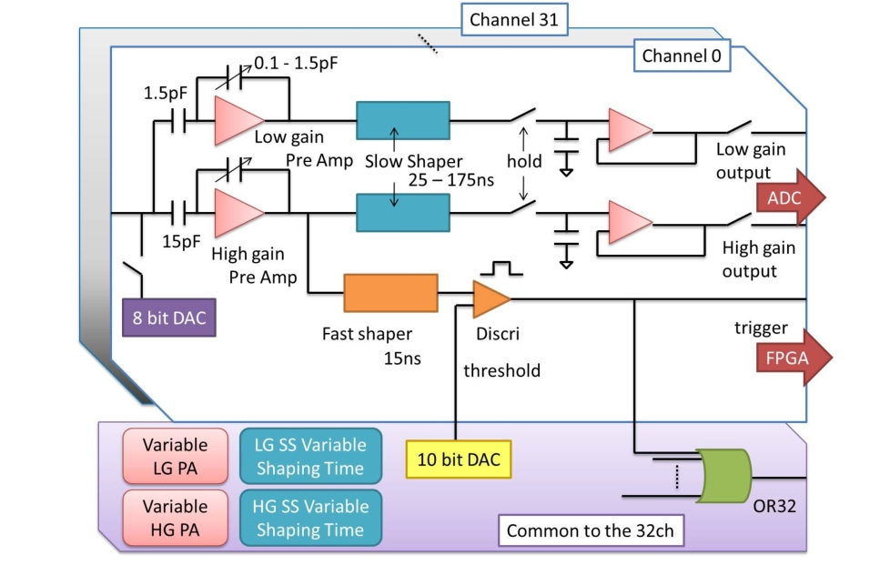
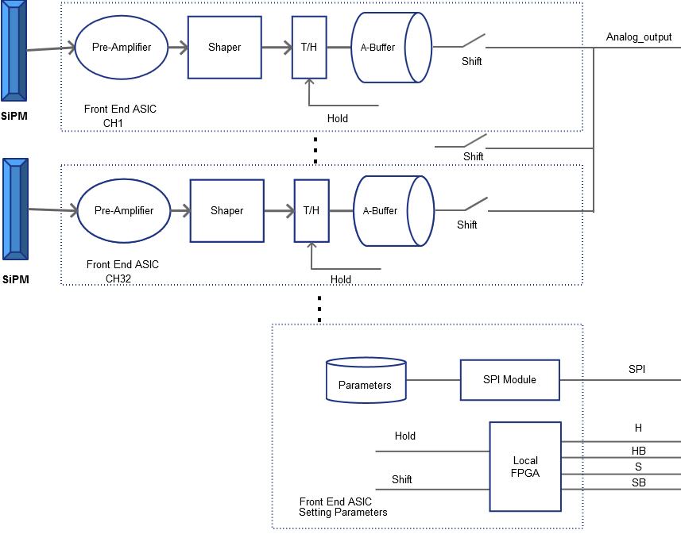
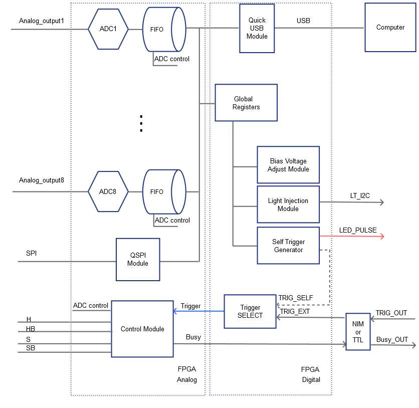
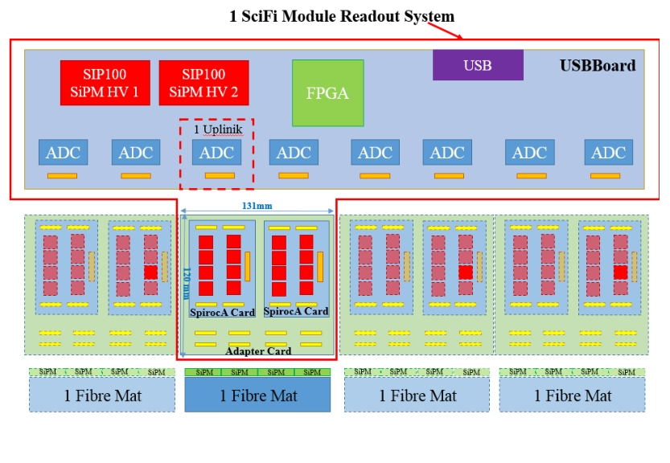

1. Scintillating Fibre Tracker
1.1 Plastic Scintillating fibres
Plastic scintillating fibres (PSF or SciFi) technology allows building intrinsically fast, low mass detectors with a high degree of geometrical adaptability, which have two functions:
- they convert the ionisation deposited by charged particles to optical photons
- they transport the optical signal to the readout devices which, in order to minimise the material budget, are often located outside the active volume
Constitution
A plastic scintillating fibre consists of a core, typically made of polystyrene (n = 1.59), and a thin cladding, made from polymers with lower refractive index, e.g. PMMA (plexiglass, n = 1.49) or a special fluorinated polymer (n = 1.42). The thickness of the cladding layer is typically 3% of the total diameter.
Signal Generation
Signal generation in a PSF is a multi-step process. Ionisation energy deposited in the core of the fibre leads to excitation of molecular levels (specifically of the so-called π electrons) in the benzene rings of the polymer chain. The relaxation time and scintillation light yield of polystyreneare however poor. An organic fluorescent dye with matched excitation energy levels is added to the polystyrene base (∼1% by weight) to improve the efficiency of the scintillation mechanism.
Energy is transferred quite rapidly (sub-ns) from the base to this ’activator’ dye by means of a non-radiative dipole-dipole transmission, known as the Förster transfer, where the excited energy state of the dye will subsequently relax by emission of a photon. The activator dye is chosen to have a high quantum efficiency (> 95%), a particular emission wavelength spectra, and fast decay time (less than a few ns). Often, a second wavelength shifting dye is admixed (∼0.05% by weight) which absorbs the photons from the activator (blue or UV) and remits them (isotropically) at longer wavelength (blue-green). In this wavelength range, the probability of re-absorption by the dyes is reduced and the photons profit from a generally better transparency of the polystyrene.
Light Transport
Light transport in the fibre relies primarily on total internal reflection at the interface between the fibre core and the cladding structure. Meridional rays, i.e. those crossing the fibre axis, are totally reflected if their angle of incidence relative to the surface normal exceeds the critical angle θ crit = arcsin(n clad /n core ). The corresponding solid angle element also called trapping fraction, describes the fraction of isotropically emitted photons which will be transported towards one end of the fibre. For round fibres with a single cladding (n core = 1.59, n clad = 1.49), this fraction is 3.1%. With a second fluorinated cladding (n clad, fluor = 1.42), the fraction is increased to 5.3%. In practice, the trapping fraction is slightly larger, as also helical paths and light reflected at the cladding-air interface contribute, however only over relatively short transport distances.

Light transported along a fibre is attenuated following, in first approximation, an exponential law I = I0·e−z/Λatt . The attenuation length Λ has various wavelength dependent contributions Λ1(λ), Λ2(λ) etc. which can be attributed to different phenomena like Rayleigh scattering, self absorption by the dyes and radiation induced defects. Essentially all effects show increased attenuation for short wavelength (blue, UV). Consequently, the emission spectrum of a fibre looses first its short component and therefore shifts towards longer, i.e. green and red, wavelengths. Particularly for long fibres this aspect has to be considered when selecting the optimum photosensor. Typical values for the attenuation length are of the order Λ att =3 ~ 5 m, averaged over the sensitivity window of a typical photosensor (400 ~ 600 nm)
Radiation Tolerance of the Fibre
The decrease in light yield from irradiated plastic scintillators is attributed to two major causes:
- degraded transmission properties of the base plastic
- a degradation of the scintillating fluors.
The second cause can usually be avoided by the choice of robust fluors that are added to the base scintillator material. Typically one or two stable compounds with large Stoke shifts and good quantum efficiency are chosen.
The degraded optical transmission of the base plastic, typically polystyrene (PS), is a result of the creation of additional scattering and absorption centres produced during irradiation. These light loss centres are macromolecule radicals produced in the polymer under ionizing radiation. The increased attenuation of the light is stronger in the blue wavelengths with less effect in the green. To reduce the impact of this effect, the radiation hardness of scintillating fibres can be improved by choosing additional scintillating dyes with large Stoke’s shifts. It has also been observed that there is a radiation dose rate effect on the creation of certain types of attenuation centres which are dependent on the availability of oxygen within the fibre for production. Additionally, different types of attenuation centres have also been observed to decay over time, with time constants depending on the radical type and, for certain other types, the abundance of oxygen within the polystyrene matrix that can aid in annealing.
As such, the total effect on the loss of light transmission depends on the particular environment within which the fibre is located, as well as the ionization rate to which the fibres are exposed.
1.2 Silicon Photo Multiplier SiPM
The SiPM is a silicon based photo detector, which is fast, compact and single photon sensitive.
Constitution & Signals
SiPM consists of many microscopic avalanche photon detectors (APDs) with typical sizes from 20 × 20 to 60 × 60 μm2 , called pixels and connected in parallel to a macroscopic (few mm2area) channel. Each pixel is operated in Geiger Muller mode such that a single photon on the pixel will trigger a complete discharge (avalanche) with the release of the full charge. The discharge stops as the current is drawn via a quench resistor and the cell then recharges. The total signal of a SiPM is the sum of the charge of all triggered pixels. SiPMs are operated at 2-3 volts overvoltage. Given an internal pixel capacitance C pixel of typically 50 fF, the charge collected for one photoelectron signal is approximately 1.2 pC (equivalent to ≈ 7.5 · 105 electrons). The SiPM offers a very fast response with a typical rise time of 3-5 ns. The dynamic range is determined by the finite number of pixels.

Signal Gain
The charge produced in a single pixel corresponds to the gain G = Q/e. The gain depends on the surface of the pixel, the thickness of the amplification region which determines the capacity and the operation voltage above the avalanche limit (∆V ): G=C·∆V/e. Different technologies will provide gains for 50 × 50 μm2 a pixels from 106 to 107.
Noise & Dark Count Rate
Impurities and thermal generation of free charges are responsible for a permanent rate of avalanches that are not induced by photons. This results in a Dark Count Rate (DCR) which is typically of the order of several 100 kHz/mm2. For SciFi applications, detection of single photons is required. With a detection threshold set to 0.5 PE, a dark noise signal is a priori indistinguishable from a photon induced signal.
Other noise sources are the after-pulses which are due to temporarily trapped charges near the avalanche region. The after-pulses occur delayed after the primary avalanche, i.e. at a time when the pixel is usually still recovering. Their amplitude depends therefore on the delay and is generally smaller than a single PE pulse. A very significant effect for SciFi applications is the optical cross talk (x-talk). During the avalanche in a pixel, a large number of Infrared Radiation photons are produced. Silicon is is largely transparent to IR and allows these photons to reach neighbouring pixels and trigger there secondary avalanches. X-talk produces signals at the same time as the primary avalanche. Over the past decade, the SiPM manufacturers have made significant progress in reducing the DCR by material and design optimizations. The best devices show now at room temperature fDCR =100 kHz/mm2.
Like other silicon devices, SiPM are sensitive to the so-called Non Ionising Energy Loss (NIEL) which leads to damage of the silicon lattice and as a consequence a large increase of the DCR and the associated leakage current. The DCR increases linearly with the particle fluence (usually expressed in the number of 1 MeV neutron equivalent particles per cm2) and rapidly reaches levels where the initial DCR is insignificant. In a SciFi tracker, where single photon sensitivity must be maintained, the DCR can only be coped with by reducing the operational temperature which reduces it by a factor 2 typically every 10 K.
1.3 Fibre Mat & LHC SciFi Tracker
Blue emitting scintillating plastic fibres of type SCSF-78MJ from Kuraray with 250 μm diameter are arranged in a staggered close-packed geometry to 6-layer fibre mats. The mats are 2.4 m long and mirror coated at the non-read end. The scintillation light exiting at the other end is detected by linear arrays of SiPM detectors (128 channels of 0.25 x 1.6 mm2 size). The height of a SiPM channel (1.6 mm) extends over all 6 layers of the fibre mat. The pitch (0.25 mm) allows resolving the clusters of hit fibres of typically 2 or 3 channels width.

The combination of small diameter scintillating plastic fibres with arrays of SiPM photodetectors has lead to a new class of SciFi trackers usable at high luminosity collider experiments. The LHCb SciFi Tracker is part of a major upgrade campaign of the LHCb detector to allow operation during the LHC Run 3, i.e. from 2019 onward, at a levelled luminosity of 2 × 1033cm−2s−1 and at a readout rate of 40 MHz (bunch crossings every 25 ns). It consists of three tracking stations with four independent planes each (X-U-V-X, stereo angle ±5◦) and extends over 6 m in width and 4.8 m in height, as seen in Figure 4.

2. Electronics Readout
2.1 Flex
The scintillating fibre ribbons are connected to the SiPM arrays, which in turn are connected to the front-end electronics through flex-PCB cables with a length of about 100 mm, as shown in Fig. 3.40. The flexibility is required to make a 90 degree bend in order to connect the SiPMs to the Front-end (FE) boards located outside the cold volume. Cooling pipes for a liquid cooling system must also be fed through this enclosure to keep the silicon photo-detectors at -40 degree. Each detector is mounted on a separate flex-PCB and attached with connectors to the FE board.

An aluminium stiffener is glued to the back side of the detector region where it allows a good thermal contact to be made with the cooling pipe. The stiffeners also play a role of “heat spreaders”, providing a uniform temperature profile over a SiPM array. If required, the stiffener could also be implemented with a material that matches the detector substrate. A passive temperature sensor (NTC or PT1000) is mounted on the back side of the detector where a cut-out in the stiffener is foreseen. The temperature sensor is connected via the flex-PCB to the FE board and can be accessed by the slow control. The temperature di↵erence between detectors on the same super-array needs to be within 1K to ensure good gain uniformity while using only one bias voltage per super-array. The bias voltage (~60V/1mA) is provided via the flex-PCB to the detector.
2.2 SpirocA
SPIROC is an auto-triggered, bi-gain, 36-channel ASIC which allows to measure on each channel the charge from one photoelectron to 2000 and the time with a 100ps accurate TDC. The integrated ASIC components allow 16 selectable pre-amplification gain factors (with output gain values from 3 to 100 mV/pC), and seven CR(RC)2 shaping times from 25 to 175 ns. After shaping, the signal is held (under the control of signal hold) at its maximum amplitude with a track and hold method. An analogue memory array with a depth of 16 for each channel is used to store the time information and the charge measurement. The data are then stored in a 4 kbytes RAM. An adjustable 8-bit DAC (0-4.5 V) in the ASIC allows individual adjustment of the SiPM forward voltage for each one of the 36 channels.
A schematic view of a single channel of the ASIC chip is given below: 
2.3 NewUSBBoard
USBBoard is designed to control, digitize and readout multichannel readout ASICs for SiPM detectors.
The typical data acquisition setup is: The small signal (typically 106 electrons per photo electron of the SiPM detectors) is pre-amplifiered and shaped through a integrated multichannel front-end chips, such as SpirocA or VATA64. The front-end ASIC acts as a signal amplifier and analog signal multiplexer and connects with the USBBoard through a uplink-cable. The ASIC is controlled via a simple protocol using a Hold, Shift, Clk and Analog_output signal. The Analog_output which is sampled under the control of Hold signal carries the data information from the SiPMs. The digital interface to control the output multiplexer is implemented via a local FPGA which acts as glue logic and signal interpreter between USBBoard Up-Link and ASIC digital interface.
The structure of the Front End ASIC is showed in the figure below.

The USBBoard is also responsible to send the AMS2 Up-link protocol and perform digitization via the ADC chips on board. Then the digital signal is stored in a FIFO in the FPGA, tagged with some event information (header) and passed to the host computer via QuickUSB module. The USBBoard has SPI control interfaces for parameter setup of the SPIROC chip and provides the low voltage power for the readout chip via Up-link interface. Also the bias voltage for the detector can be applied via USBBoard front panel connector. The USB board provides 8 Up-Link connectors which are all on the same power potential but isolated to the secondary electronics part responsible for the digital data acquisition via FPGA and USB interface.

The most important features and components of the board are given below, details of the NewUSBBoard hardware and firmware are in the Section "Development Process".
- USB 2.0 interface based on a plug in module from QuickUSB, drivers and API for Labview and c-code are given by QuickUSB
- An Altera CyclonIV FPGA (type EP4CE75F23I8L), core voltage 1.0V
- 8 channels of 12-bit ADCs (type ADS803), the sampling clock is limited to 5MHz by the ADC, there is a pin compatible ADC reaching 20MHz (ADS805). Even the ADC sampling clock is set to 5MHz, the sample is only available with a delay of 6 clock cycles.
- 8 Up-linkV3 Connectors. The connector provides the analog signal interface (2 analog signals out+ and out-), low voltage (+-2V), Bias voltage (GRING) and other control signals.
- 2 SPI interface connectors, 6-pin for only 1 slave select, 8-pin for 4 save select
- Flash chip EPCS64 is used and the FPGA will be configured automatically after power on.
- Three different Front-end Board are supported, includes VA32, VA64 and SpirocA. Jumpers are needed to choose the right Front-end board.
2.4 SciFi Module Readout
The SciFi Module Readout which is composed of SpirocA and NewUSBBoard is showed below:

We defined that one SciFi Module Readout System includes:
1×USBBoard + 2×SpirocA Cards + 1×Adapter Cards
One SpirocA Card will have 8 SpirocA chips on board, each SpirocA can readout 32 channels, so one SpirocA Card will readout 256 channels in total.
One Single SciFi Module Readout System can readout up to 4 SiPMs, this corresponds to 1 Fibre Mat.
Each SpirocA Card will be routed to 1 uplink on the USBBoard, which has a 12-bit ADC to sample and digitalize the signals.
The USBBoard have 8 uplinks, this means one USBBoard can readout 16 SiPMs, which corresponds to half of the SciFi Module.